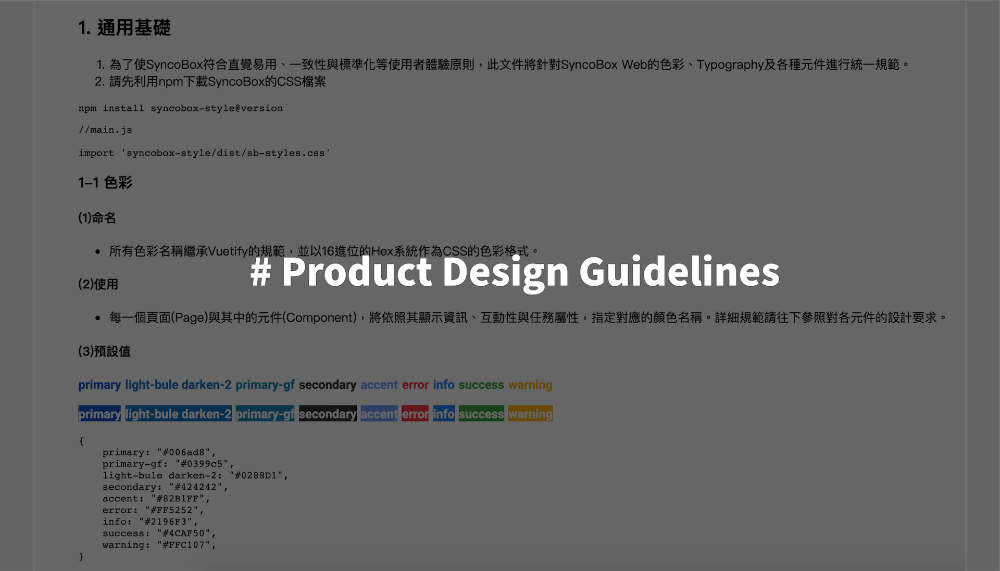

Description
2020年
為了使各個功能模組開發者所開發出的作品具有一致性，同時考慮到開發工具與採用的元件框架 (component framework)，於是以Google Material Design的設計規範作為基礎， 針對產品中出現的元件，包含版式(Typography)、按鈕(Button)、對話框(Dialog)...等項目進行設計規範。
負責項目
1. 參考Material Design設計規範，制定產品的設計規範
2. 利用CodePen作為Prototype的展示平台，以實作的範例程式碼進行溝通，更可便於前端工程師參考或直接使用 CodePen範例
後記
挑戰
通用性評估
由於同一個元件有可能在不同的情境和目的之下被使用，以 Loader來說，全頁資訊的loading、卡片(Card)資訊loading與表格內容的loading是不同的資訊尺度， 則需要適度以不同的Loader樣式來表達「這部分的資訊正在載入中」。
此外，為了讓這份設計規範在整個產品的開發過程中具有通用性，則必須全盤地了解產品的每一個畫面和功能，也需要預想可能需要被開發的頁面， 以避免單一元件有過多樣式，造成設計上的雜亂與使用者的誤解。
成長
用程式碼寫設計規範
利用程式碼在CodePen上面直接產出Prototype，減少工程師對設計規範以及互動操作的理解時間，除了強化自己的Coding能力，不只傳達設計， 也讓工程師在進行類似Code Review的時候，可以清楚理解每個設計需要達到的效果
這樣子的過程，讓我更熟稔於「對使用情境的假設」、「同理使用者」的設計師角色，與「卯足全力將功能開發完成的」程式開發者，兩者之間的立場切換。
掌握主流設計規範：Material Design
為了產出這份設計規範，特別是針對Material Design的「Component」章節進行謹慎的閱讀，也可以理解Material Design各種規範的理性基礎。 以提示文字(Tooltip)和選單(Menu)為例，顯示的資訊需要以「不影響鄰近元件的資訊」為前提進行設計，避免使用者在資訊遺漏或不完全的情況下，被迫執行重要的CTA。
關於上述這類的規範，已經跳脫美感的層次，進入了HCD的理性設計層次。透過閱讀設計規範，確實讓自己獲益良多。